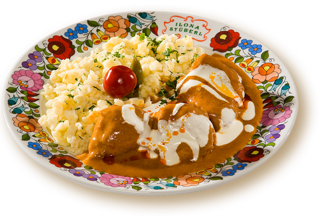

|
|
|
Geflügel
/ Sz�rnyas �telek |
|
|
|
|
|
Paprikahuhn / Paprik�s csirke |
| |
Die ungarische K�che ist eine der Gr��ten auf dieser Welt.
Daraus kennt man im deutschsprachigem Raum Gulasch am besten, im
�bersee ist jedoch Paprikahuhn als Chicken Paprikash popul�r aus
folgendem Grund:
|
|
Das Rezept ist
unsere Empfehlung
in Memoriam Laci, dem beliebten Filmpartner der Éva Gábor im
popul�ren Familiensoap der nordamerikanischen
Fernsehlandschaft der 1960er Jahre. Laci musste
jedes Mal Paprikahuhn in viel Sauerrahm kochen, wie von den
Hollywood-Diven lustiger weise vorgegaukelt, wenn die
K�chenlaien Éva
und Zsazsa sich gegenseitig besuchten bzw. inspizierten. Seitdem ist Chicken Paprikash in
Nordamerika ein beliebtes Gericht, nun schon seit
Jahrzehnten. Popul�r ist Paprikahuhn in �bersee, wie Gulasch
in Deutschland. Das ist nicht zuf�llig, denn die Rezepte der
beiden ungarischen Nationalgerichte sind fast identisch,
ihre Zubereitung ist wenig zeitraubend und einfach zu erlernen - ideal f�r
Anf�nger und K�chenprofis gleicherma�en. |
 |
|
Im �bersee ist
jedoch alles mit viel Hollywood-Schnickschnack, Sahne und
Butter zum Angeben bis zum geschmackslosen Nimmer geht und
mit Zutaten, die im Originalrezept �berhaupt nicht
vorkommen. Amerikanische M�tter mit ungarischen Wurzeln
sieht man viele in den Internetvideos, die angeblich gut
kochen k�nnen, aber wir haben keine gesehen, die das Rezept
zuvor nicht im �bersee mit den dort �blichen
Fehlentwicklungen vorgef�hrt h�tte. Unten zeigen wir im
Video, wie man Paprikahuhn in Ungarn kennt. |
|
Vorwort
-
Die
Begriffe Pörkölt
und Paprik�s
Wenn
Pörkölt
(das Tellergericht Gulasch) aus in Streifen geschnittenem Fleisch
mit Paprika gew�rzt, gekocht und mit Sauerrahm bzw. saurer Sahne
serviert wird, spricht man von Paprikasch
(Paprikás bedeutet auf Deutsch: mit Paprika).
Der gemahlene Gewürzpaprika ist eine typische Zutat in der
ungarischen Küche. Traditionell verwendet man eine halb
und halb Mischung von edelsüßem und rosenscharfem
Paprikapulver.
Unz�hlige Gerichte haben das Wort Paprika schon in ihrem
Namen: Hähnchen-,
Hammel-, Kalbs-, Rinder-, Schweine- oder Fischpaprikasch.
Unabhängig ob Pörkölt oder
Paprik�s, in beiden Fällen beginnt man
damit, dass man Zwiebeln in heißem Fett
dünstet oder schmort, Salz und Paprikapulver
kurz unterrührt und dann das in Stücke geschnittene
Fleisch dazugibt und glasiert. Wichtig ist dabei, dass
man wenig Salz verwendet, sonst zieht das Salz die
Eigenfl�ssigkeit aus dem Fleisch, das dadurch hart und trocken
wird. Der Grund f�r diese neuzeitliche Entwicklung k�nnte der
Trend zu magerem Fleisch sein. Aus diesem Grund salzen und
schmecken immer mehr Leute erst zu Ende der Kochzeit ab.
|
Zutaten für 4
Personen: 1 saftiges
Huhn, frisch vom Markt (kein Suppenhuhn, am besten nur fleischige
Stücke, wie Bein und
Brust), 0,2 l
Sauerrahm, 2 EL Mehl, 50g
geräucherter Speck, 2 mittelgroße Zwiebel, 2 gelbspitze
Paprika, 2 mittelgroße Tomaten, 1EL
edelsüßes Paprikapulver, 1EL
rosenscharfes Paprikapulver, 1-2 TL
Mehl, Salz nach Geschmack, evtl. 0,5 l Fleischbr�he.
|
Vorbereitung: Das
Hähnchen nach dem Waschen in kleine Stücke schneiden.
Die Schenkel in zwei, die Brust in vier, die Flügel ebenso in
zwei, den Rücken sowohl quer als auch längs
in zwei Teile. Die Fleischstücke ein wenig salzen, evtl. am
Vorabend in einer Paprikamarinade ertr�nken und im
Kühlschrank lagern,
damit sie saftiger bleiben. Die Zwiebeln putzen und mittelgrob hacken, den geräucherten Speck
in einer Pfanne schwitzen lassen.
|
Zubereitung: Die
Zwiebel im Speckfett glasig dünsten, dann von der Kochstelle
nehmen, das rote Paprikapulver darin verr�hren und
das Hähnchenfleisch darin wenden, erneut am Herd bei
großer Hitze von allen Seiten anbraten. Wenn alle
Fleischstücke weiß geworden sind, dann anderthalb
Glas Wasser oder Fleischbr�he nach und nach untergießen, und beim
häufigen Schütteln des Topfes weich
dünsten (Darf nicht mit Kochlöffel umrührt
werden, sonst f�llt das zarte Hähnchenfleisch schnell auseinander). Wenn die Fleischbrühe verkocht ist,
aber das Fleisch noch nicht weich genug ist (mit Gabel
testen), dann
nach und nach ein EL heißes Wasser hinfügen.
Abschließend den entrappten und zerkleinerten Paprika
und Tomate hineingeben und salzen. Mit
der mit Mehl glatt verrührten saure Sahne verdicken bzw.
aufkochen - siehe das Video dazu. Wer gern scharfes isst, kann das
rosenscharfe Paprikaplver mit Chilipaprika
verlängern.
|
Beilagen: Ohne
Spätzle ist Paprikahuhn eine Suppe. Es ist egal, ob man dieses
Gericht mit
ungarischen Nockerli (=bayerische Knobben),
schwäbischen Knöpfle oder Spätzle serviert.
Als Beilage gibt man Blattsalat oder Sauerteiggurken, eine Art Salz-Dill Gurken dazu.
|
Haustipp -
Paprikahuhn-Flüssigkeit: Wird das Paprikahuhn in
sehr viel Flüssigkeit gekocht, kann man diese mit Tomatensauce (Mark aus der Tube)
verlängern und darin gefüllten Paprika kochen! So
benötigt man am nächsten Tag viel weniger Zeit zum Kochen.
Das gleiche gilt f�r die Gulaschsuppe.
|
Das
folgende Video wird (leider) auf Ungarisch besprochen und dabei so gekocht, wie
man Paprikahuhn in Ungarn landesweit kennt, genau nach dem oben
beschriebenen Rezept. Ob Sie �berhaupt Mehlschwitze verwenden - wie im Video -
und diese am Anfang oder Ende in die Kochfl�ssigkeit
r�hren, das soll Ihre Entscheidung sein. Viele m�gen die
Mehlschwitze nicht und r�hren stattdessen am Tisch etwas vom
Sauerrahm in den Teller.
F�r den Fachmann ist das Verwenden von Mehlschwitze ein
ausschlie�ender Faktor. In den Paprik�s bzw. Paprikasch geh�rt
grunds�tzlich Sauerrahm und keine Mehlschwitze, wie im Video
vorgef�hrt -, aber viele kochen so:
|
|
| |
|
| |
| |
| |
|  |
|
Paprikahuhn |
| |
|
|
|
|
|
|
|
Gef�lltes Huhn / T�lt�tt csirke |
| |
Ob Huhn,
Ente oder Gans - unter den gef�llt zubereiteten K�chenspezialit�ten
ist wahrscheinlich Gef�llte Ente am beliebtesten. K�chenprofis ben�tigen keine Anleitung,
Anf�nger umso mehr. Aus diesem Grund zeigen wir das, was am
einfachsten nachzumachen ist und zu weiteren Anregungen
verf�hren soll. Einfachheitshalber werden hier nur
H�hnerschenkel gef�llt. Das folgende Video ist auf Ungarisch,
darunter die Beschreibung auf Deutsch.
|
|
| |
Zubereitung: Das
H�hnerfleisch wird gewaschen und von unerw�nschten Teilen befreit.
2 dicke Wei�brotscheiben in kaltem Wasser einweichen
anschlie�end das Wasser aus dem Brot pressen.
Grob gew�rfelte Zwiebeln in einer Pfanne in �l anr�sten,
zerkleinertes Petersiliengr�n dazu mischen.
Pfanneninhalt zum zerdr�ckten Brot geben. In die F�llmasse
kommen noch 3 Eier, 2 zerriebene Knoblauchzehen, 2 Teel�ffel
Salz, 1 TL Geschmacksverst�rker (Vegeta oder Knorr), 1 TL
Pfefferpulver - alles vermischen.
Die
F�llmasse wie im Video sichtbar, unter die H�hnerhaut
f�llen. Die Schenkel in eine etwas gefettete Bratpfanne oder
R�mertopf legen,
Wasser zum Dampfgaren dazu gie�en, mit Alufolie bedeckt im Backofen bei 200-220 �C ca. 40 Minuten
lang backen. Eventuell �briggebliebene F�llmasse dazutun und mit
Folie bedeckt weitere 30 Minuten lang backen. Mit Bier
begie�en und ohne Folienabdeckung in etwa 10 Minuten knusprig backen. |
|
|
|
|
|
Szegediner H�hnergulasch / Csirkep�rk�lt szegedi m�dra |
| |
Zutaten: 1,8 kg Junghuhn, 1 Zwiebel, 1 Knoblauchzehe,
3-4 TL Gew�rzpaprikapulver, 1,5 TL Salz, 2 Tomaten, 3
Paprikaschoten, 100 g Mohrr�ben, 50 g Sellerie, 500 g
Kartoffeln, 100 g Fett, 100 g Zupfnudeln.
Zubereitung: Das
Huhn waschen und in St�cke zerteilen. Im Kochtopf die
kleingehackte Zwiebel im Fett glasig schmoren, vom Herd
nehmen, Paprikapulver darin verr�hren und das H�hnerfleisch,
die Leber (ob auch die weiteren Innereien, das �berlassen wir
Ihnen) darin wenden und kurz anr�sten bis das Fleisch
vollst�ndig vom Paprika verf�rbt ist. Abschlie�end salzen und
in wenig Wasser d�nsten. Zwischendurch die zerdr�ckte
Knoblauchzehe dazugeben und weiterd�nsten, bis das Fleisch
halbfertig gekocht ist. Die gepellte und zerquetschte oder
zwiebelartig kleingehackte Tomate, die in ca. 1 cm gro�e
W�rfeln geschnittenen Paprikaschoten und Kartoffeln dazugeben
und in wenig Wasser im bedeckten Topf weich d�nsten. Mit
soviel Wasser auff�llen, dass das die Suppe bedeckt ist und
erneut aufkochen.
Zupfnudel:
1 Ei, 2 Prise Salz und soviel Mehl (ca. 50 g) auf einem mit
Mehl bestreuten Nudelbrett durchkneten, bis der Teig eine
geschmeidige, jedoch sehr feste Konsistenz hat. Aus dem Teig
kleine, ca. 1/2 cm gro�e St�cke zupfen, zwischen Daumen und
Zeigefinger platt walzen. In Salzwasser fertigkochen, unter
Hei�wasserstrahl absp�len und zum Srvieren bereithalten.
Servieren: Die Suppe wird in einem
Serviersch�ssel aufgetischt und dort werden die Zupfnudeln in
die Suppe gemischt. |
| |
| |
| |
| |
| |
Ungarn-Tourist Team

|
| |
 |
| |
|